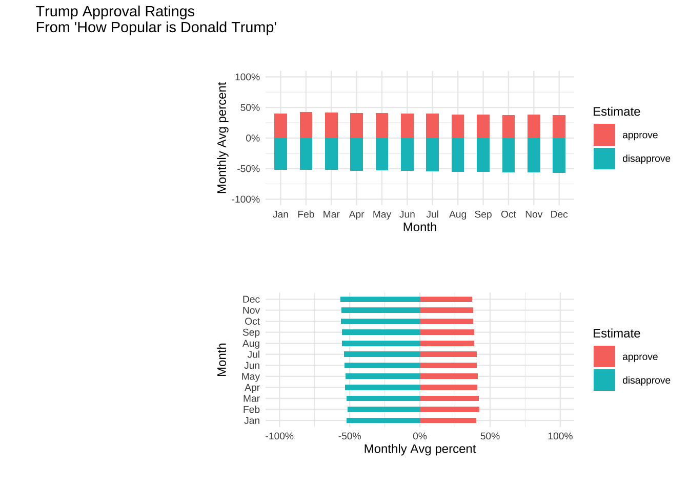
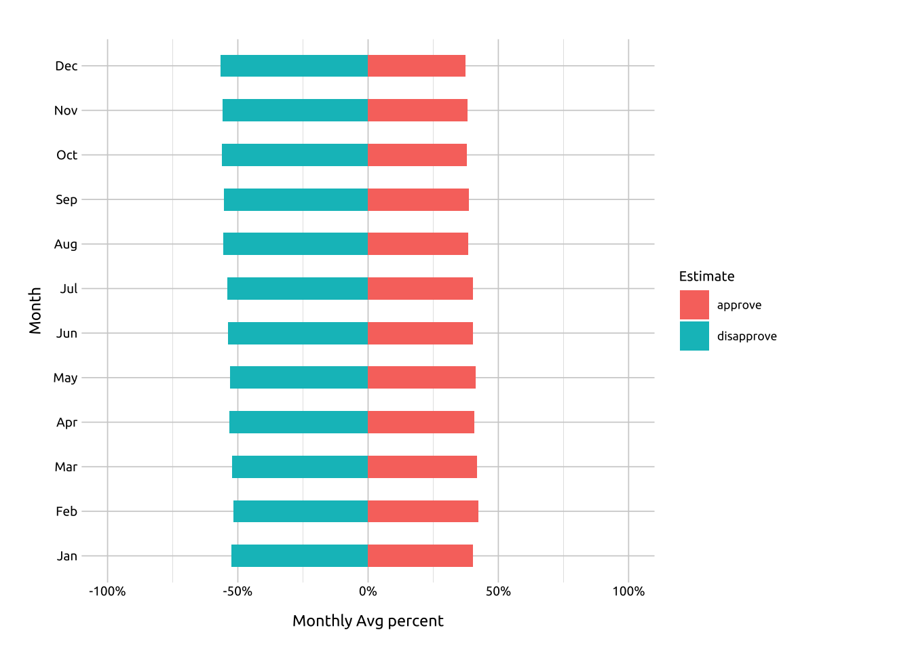

Diverging Bar-graphs
Graph info
When would I use this graph?
If you have two proportions that contain positive and negative values, consider using diverging bars with geom_bar().
Unlike a standard or stacked bar graphs, diverging bar graphs display positive and negative quantities on both sides of a reference or baseline value (zero in this example). Color, length and position are used to compare the quantities across categorical levels (and within variable values).

For example, we can use the length of the bar from the reference line to compare disapproval estimates across all months (i.e., comparing red bars to each other).

We can also compare approval vs. disapproval for each month (i.e., compare the blue vs. red bars to each other within each month).
PACKAGES:
Install packages.
install.packages("fivethirtyeight")
library(fivethirtyeight)
library(ggplot2)DATA:

Create trump_approval_diverg from the trump_approval_trend dataset in the fivethirtyeight package.
fivethirtyeight::trump_approval_trend |>
filter(subgroup == "All polls") |>
mutate(
month = lubridate::month(modeldate,
label = TRUE, abbr = TRUE),
approve = approve_estimate*0.01,
disapprove = disapprove_estimate*0.01,
disapprove = disapprove * -1) |>
pivot_longer(cols = c(approve, disapprove),
names_to = "poll", values_to = "values") |>
group_by(month, poll) |>
summarise(
month_avg = mean(values, na.rm = TRUE)
) |>
ungroup() -> trump_approval_diverg
glimpse(trump_approval_diverg)Rows: 24
Columns: 3
$ month <ord> Jan, Jan, Feb, Feb, Mar, Mar, Apr, Apr, May, May, Jun, Jun, …
$ poll <chr> "approve", "disapprove", "approve", "disapprove", "approve",…
$ month_avg <dbl> 0.4029758, -0.5234634, 0.4226055, -0.5158645, 0.4182011, -0.…CODE:
Create the labels
Map the month to the x and month_avg to the y
Insidegeom_bar()
map
polltofilluse
stat = "identity"andwidth = .5
Add scale_y_continuous() to manually set the limits and format the axis with scales::percent
Move the legend to the bottom of the graph with theme(legend.position = "bottom")
labs_geom_bar_diverg <- labs(
title = "Trump Approval Ratings",
subtitle = "From 'How Popular is Donald Trump'",
x = "Month",
y = "Monthly average percent",
fill = "Estimate")
ggp2_bars_diverg <- ggplot(
data = trump_approval_diverg,
aes(x = month, y = month_avg)) +
geom_bar(aes(fill = poll),
stat = "identity", width = .5) +
scale_y_continuous(limits = c(-1, 1),
labels = scales::percent) +
theme(legend.position = "bottom")
ggp2_bars_diverg +
labs_geom_bar_divergGRAPH:

Vertical diverging Bar-graphs
For vertically arranged bars, we switch the x and y axis variables.
CODE:
Create the labels
Map the month_avg to the x and month to the y
Inside geom_bar()
map
polltofilluse
stat = "identity"andwidth = .5
Add scale_y_continuous() to manually set the limits and format the axis with scales::percent
labs_geom_bar_diverg_vert <- labs(
title = "Trump Approval Ratings",
subtitle = "From 'How Popular is Donald Trump'",
x = "Monthly average percent",
y = "Month",
fill = "Estimate")
ggp2_bar_diverg_vert <- ggplot(
data = trump_approval_diverg,
aes(x = month_avg, y = month)) +
geom_bar(
aes(fill = poll),
stat = "identity", width = .5) +
scale_x_continuous(limits = c(-1, 1),
labels = scales::percent)
ggp2_bar_diverg_vert +
labs_geom_bar_diverg_vertGRAPH: